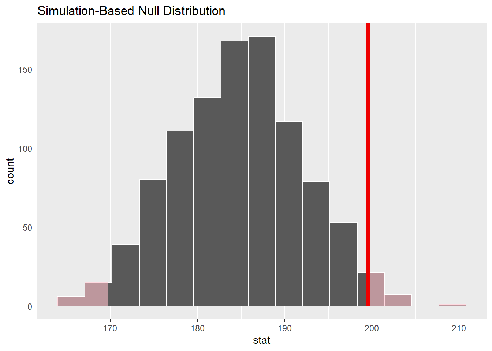

#install.packages("datarium")
#install.packages("ggplot2")One sample/Paired t-test
One Sample t-Test
- One sample paired t-test is used to compare the means between two related groups.
- Used to determine if the mean difference between the two groups is 0
- This statistical test is used in case control studies where there is a control group and a treatment group
One Sample Paired t-test
- Each subject is measured twice which makes it a paired observation
- This type of statistical test is usually used in repeated measures studies
T-test statistic
\[t=\frac{m}{\frac{s}{\sqrt{n}}}\]
t: test statistic
m: sample mean
s : standard deviation
n : sample size
Install packages
Load in libraries
# Library that contains mice2 data
library(datarium)
# Library that is used for some statistical analysis
library(rstatix)
# Library used to graph the normality QQ plot
library(ggplot2)
library(tidyverse)Steps for one sample paired t-test
Know what the assumptions are:
- Are the two samples paired?
- Is this a large sample?
- Is the data normally distributed?
- Is the dependent variable numeric or continuous?
- Are the observations independent of each other?
Form your hypothesis:
Null hypothesis: Assumes that the true mean difference is 0 There is no difference in mean between the 2 groups
Alternative hypothesis: The true is mean difference is not 0
Calling in and looking at data
Contains the weight of 10 mice before and after treatment
# Bringing in the values into our environment
# This data is in wide format
data("mice2", package = "datarium")
# Gives us the number of observations and the total number of variables
str(mice2)'data.frame': 10 obs. of 3 variables:
$ id : int 1 2 3 4 5 6 7 8 9 10
$ before: num 187 194 232 200 202 ...
$ after : num 430 404 406 397 378 ...#Shows us all the observations
print(mice2) id before after
1 1 187.2 429.5
2 2 194.2 404.4
3 3 231.7 405.6
4 4 200.5 397.2
5 5 201.7 377.9
6 6 235.0 445.8
7 7 208.7 408.4
8 8 172.4 337.0
9 9 184.6 414.3
10 10 189.6 380.3Form our hypothesis:
Null hypothesis: There is no difference in the weight of the mice before and after treatment
Alternative hypothesis: The treatment affected the weight of the mice
Transforming data to long format
mice2_long <- gather(mice2, group, weight, before:after, factor_key=TRUE)Summary statistics
# Use this to quickly look at mean and sd
mice2_long %>%
group_by(group) %>%
get_summary_stats(weight, type = "mean_sd")# A tibble: 2 × 5
group variable n mean sd
<fct> <fct> <dbl> <dbl> <dbl>
1 before weight 10 201. 20.0
2 after weight 10 400. 30.1Checking for outliers
# Mutate the original mice2 data set to include a new column that has the
# difference in weights before and after treatment in order to graph QQ
# normality graph
mice2_m <- mice2 %>%
mutate(weight_diff = after - before)
mice2_m %>% identify_outliers(weight_diff)[1] id before after weight_diff is.outlier is.extreme
<0 rows> (or 0-length row.names)Checking normality
mice2_m %>% shapiro_test(weight_diff) # A tibble: 1 × 3
variable statistic p
<chr> <dbl> <dbl>
1 weight_diff 0.968 0.867Since the two values are greater than 0.05 significance, this means that the data is not significantly different from normal distribution
Due to this, we can assume normality
QQ-polt for normality
ggplot(data = mice2_m) +
theme_minimal() +
aes(sample = weight_diff) +
labs(title = "Weight difference QQ-plot") +
stat_qq() + stat_qq_line()T-test using base r
# Weight before and after need to be in different vectors in order to see
# the difference in the t-test
before <- mice2$before
after <- mice2$after
# Computing t-test
Mice.test <- t.test(before, after, paired = TRUE)
Mice.test
Paired t-test
data: before and after
t = -25.546, df = 9, p-value = 1.039e-09
alternative hypothesis: true mean difference is not equal to 0
95 percent confidence interval:
-217.1442 -181.8158
sample estimates:
mean difference
-199.48 T-test result
t-test (t) statistic was found to be (t=-25.546)
Degree of freedom (df = 9)
Level of significance (p-value = 1.039e-09 )
Confidence interval (CI) (-217.1442,-181.8158)
P-value was found to be 1.039e-09, which is less than 0.05, meaning that we reject the null hypothesis The average weight of the mice before the treatment is significantly different from the average weight after the treatment.
Paired T test using tidymodels package
## Unload rstatix package because it interferes with tidymodels
detach("package:rstatix", unload = TRUE)Install and Load tidymodels package
#install.packages("tidymodels")
library(tidymodels)
library(gt)wrapper function t_test()
t_test_example <- mice2 %>%
# Create response variable
mutate(difference = after - before) %>%
t_test(response = difference, mu = 0, alternative = "two-sided") %>%
gt()
t_test_example| statistic | t_df | p_value | alternative | estimate | lower_ci | upper_ci |
|---|---|---|---|---|---|---|
| 25.5463 | 9 | 1.038922e-09 | two.sided | 199.48 | 181.8158 | 217.1442 |
This result matches the base R result that showed a mean difference of -199.48
generate the null distribution and the test statistic
- specify() the response variable
- hypothesize() to declare the null hypothesis
- generate() the null distribution - bootstrap
- calculate() the observed t-statistic
## Calculate the observed statistic
observed_statistic <- mice2 %>%
mutate(difference = after - before) %>%
specify(response = difference) %>%
calculate(stat = "mean")
## create the simulation null distribution
null_distribution <- mice2 %>%
mutate(difference = after - before) %>%
specify(response = difference) %>%
hypothesize(null = "point", mu = 185) %>%
generate(reps = 1000, type = "bootstrap") %>%
calculate(stat = "mean")
null_distribution %>%
head() %>%
gt()| replicate | stat |
|---|---|
| 1 | 178.33 |
| 2 | 192.60 |
| 3 | 189.02 |
| 4 | 175.89 |
| 5 | 191.28 |
| 6 | 169.59 |
Visualize the simulation distribution
## visualize
null_distribution %>%
visualize() +
shade_p_value(
observed_statistic,
direction = "two-sided"
)
Calculate the P -value
## p-value
p_value <- null_distribution %>%
get_p_value(observed_statistic, direction = "two-sided") %>%
gt()
p_value| p_value |
|---|
| 0.034 |